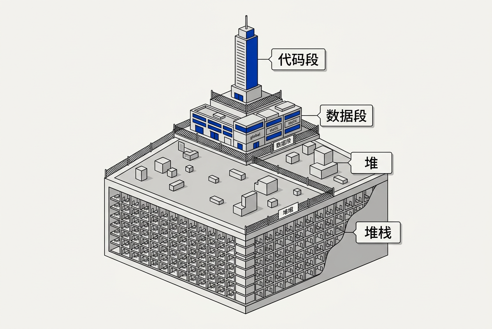
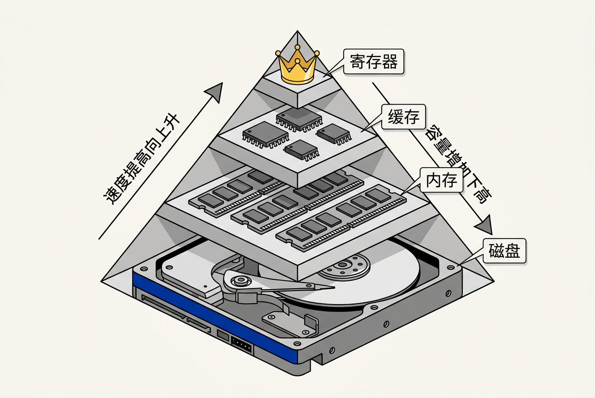

第3章：软件工程基础 — 零基础讲义
讲义说明
本讲义基于 Jason Gregory 所著《Game Engine Architecture Volume I》第4版第3章（Fundamentals of Software Engineering for Games, p.93-185），由10年经验游戏引擎工程师执笔，逐节专业翻译、逐步展开推导。
细到 x.x.x 三级章节，零基础读者不必看原书也能完全理解。
本版插画由 ImageGen + Guizang 材质插画标准流程生成。
学习目标
- 理解 C++ 封装、继承、多态三大特性在游戏引擎中的具体应用
- 掌握断言、异常、返回值三种错误处理方式的取舍
- 能画出程序在内存中的四段结构图
- 理解内存层次结构如何影响游戏性能
- 明白栈分配比堆分配快 100-1000 倍的根本原因
- 了解虚函数表、虚拟内存、内存对齐等底层概念
- 掌握面向数据设计（DOD）的核心思想
3.1 C++ 与面向对象
游戏引擎是大型 C++ 软件系统。Unreal Engine 5 有数千万行 C++ 代码。这一节我们从面向对象三大特性讲起，逐步深入到指针/引用、虚函数表等关键概念。
3.1.1 面向对象三大特性
一句话总览：封装 = 隐藏细节，继承 = 复用代码，多态 = 统一接口不同行为。
3.1.1.1 封装
生活类比：你按遥控器上的音量键。你不知道遥控器内部是红外线发射还是蓝牙信号——你也不在乎。你只关心"声音变大了"。这就是封装：把内部实现隐藏起来，对外只暴露有限的、稳定的接口。
在游戏引擎中：
class Player {
public:
// ---- 公开接口：其他人只能通过这些函数操作 Player ----
void TakeDamage(float amount); // 受伤
void Heal(float amount); // 治疗
float GetHealth() const; // 查询血量
bool IsAlive() const; // 是否存活
private:
// ---- 私有实现细节：外部代码不能直接访问 ----
float m_health; // 当前血量
float m_maxHealth; // 最大血量
bool m_isInvincible; // 是否无敌（可能被道具激活）
// 内部辅助函数，外部不需要知道它的存在
void ClampHealth() {
if (m_health < 0.0f) m_health = 0.0f;
if (m_health > m_maxHealth) m_health = m_maxHealth;
}
};外部代码只能通过 TakeDamage()、GetHealth() 等函数与 Player 交互。它们不能直接写 player.m_health = 999999——因为 m_health 是 private 的。
这有什么好处？如果在某个版本中你要把血量计算公式从"减去伤害值"改为"减去伤害值 x 护甲穿透系数"，你只需要修改 TakeDamage() 内部。所有调用者不需要改任何代码——这就是封装的威力：修改内部实现不影响外部调用者。
3.1.1.2 继承
生活类比：你想做一个"带灯的办公椅"。你有普通椅子的设计图（基类）——它有四条腿、一个坐垫、一个靠背。你现在要做的是在它上面加两个零件：灯和电源线。你不用从零画椅子的四条腿——你继承普通椅子，然后添加灯的部件。
游戏引擎的典型继承链：
// 基类：所有"能放在游戏世界里的东西"的共性
class Actor {
public:
Vector3 m_position; // 世界坐标
Vector3 m_rotation; // 旋转
Vector3 m_scale; // 缩放
virtual void Tick(float deltaTime) {
// 每帧被调用一次。基类什么都不做
}
};
// 派生类：角色（有血量的 Actor）
class Character : public Actor {
public:
float m_health;
float m_maxHealth;
virtual void TakeDamage(float amount) {
m_health -= amount;
if (m_health <= 0.0f) Die();
}
virtual void Die() {
// 播放死亡动画、掉落道具等
}
};
// 进一步派生：玩家角色（有输入控制的 Character）
class PlayerCharacter : public Character {
public:
void HandleInput(InputInfo input) {
// 处理键盘/手柄输入
}
void Tick(float deltaTime) override {
// 重写 Tick，每帧检查输入
HandleInput(GetInput());
Character::Tick(deltaTime); // 调用父类的 Tick
}
};这个继承链一共三层：Actor → Character → PlayerCharacter。每一层都在上一层的基础上增加新的能力。
如果引擎里要加一个"敌人角色"，你可以继承 Character：
class EnemyCharacter : public Character {
public:
AIComponent m_ai; // AI 组件
void Tick(float deltaTime) override {
m_ai.Update(deltaTime); // 更新 AI 逻辑
Character::Tick(deltaTime);
}
};不需要重写血量、受伤、死亡这些逻辑。它们已经写在 Character 里了，EnemyCharacter 直接继承过来就能用。这就是继承的价值：复用代码，避免重复造轮子。
那 Actor 类会膨胀到几万行，包含血量、输入处理、AI、物理……所有东西。几乎不可能维护。继承让我们把代码按"概念层次"组织：Actor 层只关心位置，Character 层关心血量，Player 层关心输入。每层聚焦于自己的职责。
3.1.1.3 多态
生活类比：都叫"播放"——播放 MP3 是音乐响起，播放 DVD 是电影开始，播放黑胶唱片是唱针落下。调用者不需要知道具体是哪种设备——只管说"播放"，设备自己知道怎么做。
游戏引擎中最经典的例子——武器系统：
class Weapon {
public:
// 纯虚函数 = 所有武器必须实现 Fire()
virtual void Fire() = 0;
};
class Gun : public Weapon {
public:
void Fire() override {
SpawnBullet(m_muzzlePosition, m_barrelDirection);
PlaySound("gun_shot.wav");
m_ammo--;
}
};
class Bow : public Weapon {
public:
void Fire() override {
SpawnArrow(m_owner.GetAimDirection());
PlaySound("bow_release.wav");
m_energy -= 10.0f;
}
};
class MagicStaff : public Weapon {
public:
void Fire() override {
CastSpell("fireball", m_target);
PlaySound("magic_fire.wav");
m_mana -= 30.0f;
}
};现在，玩家切换武器时，游戏逻辑只需要这样写：
void PlayerCharacter::FireWeapon() {
// currentWeapon 可以是 Gun / Bow / MagicStaff 中的任意一种
// 但这里只需要调用 Fire()——多态机制自动决定调用哪个版本的 Fire
currentWeapon->Fire();
}currentWeapon 是一个 Weapon* 类型的指针。它指向 Gun 时调用 Gun::Fire()，指向 Bow 时调用 Bow::Fire()。调用者（FireWeapon()）完全不知道也不关心玩家当前拿的是什么武器。这就是多态的魅力。
对扩展开放（可以加新武器），对修改关闭（不需要改已有代码）。这是面向对象设计的核心目标之一。
3.1.2 指针 vs 引用
一张表讲清楚：
| 特性 | 指针 int* p | 引用 int& r |
|---|---|---|
| 能否重新指向 | 可以 p = &y; | 不行——初始化后永远绑定 |
| 能否为 null | 可以（危险！使用时必须检查） | 不能——必须绑定有效对象 |
| 占用内存 | 8 字节（64位），单独存储地址 | 不占——它是原始变量的别名 |
| 怎么访问值 | *p 或 p->member | 直接 r（语法糖） |
游戏引擎惯例：Unreal Engine 用 UObject* 指针管理所有对象——因为对象可以被销毁、移动、重新创建。引用通常用于函数参数（传递大对象时避免拷贝）。
3.1.3 虚函数与虚函数表（vtable）
多态在底层是怎么实现的？答案是虚函数表（vtable）。
每个有虚函数的类，编译器会为它生成一个隐藏的函数指针数组——这个数组就叫虚函数表（vtable）。
每个对象有一个隐藏的成员变量——vptr（指向自己类的 vtable 的指针）。
// 概念伪代码
Weapon::vtable = {
&Weapon::Fire // 纯虚函数 = 0
};
Gun::vtable = {
&Gun::Fire
};
Bow::vtable = {
&Bow::Fire
};当调用 weapon->Fire() 时，底层执行的是：
// 概念伪代码——实际由编译器生成
void CallVirtualFire(Weapon* w) {
// 第一步：从对象读取 vptr（间接访问 #1）
VTable* vt = w->vptr;
// 第二步：从 vtable 中读取 Fire 函数地址（间接访问 #2）
FunctionPtr func = vt[0];
// 第三步：跳转到该地址执行
func(w);
}三步操作，两次间接内存访问（读 vptr、读 vtable）。而普通函数调用只需要"直接跳转到编译期确定的地址"——一步到位。这就是虚函数比普通函数调用稍微慢一点的原因（大约多 2-10 个 CPU 周期）。
在性能关键的代码中（比如每帧执行几百万次的渲染循环），游戏引擎有时会避免使用虚函数，改用编译期多态（如模板/CRTP 模式）。但对于大多数日常代码，虚函数的性能开销可以忽略不计。
3.2 错误处理与断言
游戏中的错误处理与普通应用软件不同——你可能没有"返回错误页"的选项。本节讲三种错误处理方式及其在游戏引擎中的取舍。
3.2.1 三种错误处理方式
3.2.1.1 返回值检查
File file;
if (!file.Open("config.ini")) {
// 打开失败——处理错误
LogError("无法打开配置文件 config.ini");
return;
}
// 继续执行……优点：简单、直接、无隐藏开销。
缺点：调用者可能忘记检查返回值。多层调用链中错误被掩盖，定位困难。
3.2.1.2 C++ 异常
try {
int* hugeArray = new int[1000000000000];
ProcessArray(hugeArray);
} catch (std::bad_alloc& e) {
LogError("内存不足：" + string(e.what()));
GracefulShutdown();
}优点：异常自动沿调用栈向上传播，不需要每层都检查返回值。
缺点（致命）：游戏引擎几乎全部禁用 C++ 异常。原因：
- 性能开销：编译器需要生成额外的栈展开代码（unwind tables），增加二进制文件大小。即使在没抛出异常的正常路径中，也有少量性能损失。
- 不可预测性：异常抛出时的栈展开耗时不确定——可能微秒级，也可能毫秒级。在游戏引擎的 16.7ms 帧预算中，这种不确定性是不可接受的。
- 最佳实践：Unreal Engine、Unity 等主流引擎都使用编译选项
-fno-exceptions或/EHsc-禁用 C++ 异常。
3.2.1.3 断言（assertion）
void SetPlayerName(const char* name) {
// 断言：name 不能是空指针
// 如果 name 是 nullptr，程序立即停止
assert(name != nullptr && "Player name cannot be null!");
// 断言通过后才执行实际逻辑
m_name = name;
}断言的含义是："这里不应该发生这种情况。如果发生了，说明程序有 bug——停下来让我修。"
断言在 Debug 版本中生效。在 Release 版本中，assert() 被完全编译掉——不产生任何代码。所以断言不影响玩家电脑的运行性能。
大部分游戏引擎（Unreal、Unity）明确禁用 C++ 异常，但大量使用断言。原因：
• 引擎出错时通常"恢复不可能"——贴图加载失败怎么办？用默认贴图，然后断言之。
• 断言比"默默返回错误"好得多——它立刻把问题暴露在开发者面前。
• 断言只在 Debug 版本启用——不影响发布版本的性能。
3.2.2 断言哲学
生活类比：飞机安检。身份不对立刻拦下，比让问题混进去好得多。
一个完整的断言系统通常包括：
assert(condition)：基础断言verify(condition)：无论 Debug 还是 Release 都生效的断言check(condition)：Unreal 自定义的类似 verify 的宏ensure(condition)：Unreal 的"软断言"——只记录一次不崩溃
假设有一个函数 calculateDamage() 内部发生了空指针访问。你用 if 检查 + return 的话，程序会继续运行——在错误状态下运行。之后渲染模块读取了错误的数据，在完全不相关的代码中崩溃。排查者看到的是"渲染崩溃"，但根因是"calculateDamage 里的空指针"。这种"错误传播"导致定位时间从 5 分钟变成 5 小时。断言直接把罪魁祸首按在案发现场。
3.3 数据、代码与内存布局
你的程序在内存中长什么样？这是编译器决定的事情，但理解它对写出高性能代码至关重要。

3.3.1 四段结构详解
用一个具体例子来理解四段：
// 数据段：程序启动时分配，结束时释放
int g_globalCounter = 0; // 全局变量 → 数据段(.data)
static float s_pi = 3.14159f; // 静态变量 → 数据段(.data)
void SomeFunction() {
// 栈：函数调用时分配，函数返回时释放
int localVar = 42; // 局部变量 → 栈
float array[100]; // 局部数组 → 栈
// 堆：手动分配，手动释放
int* heapVar = new int(100); // new → 堆
delete heapVar; // delete → 从堆释放
// 代码段：编译时就确定的机器指令
// SomeFunction 的指令就在代码段中
}3.3.1.1 代码段（.text）
存储 CPU 要执行的机器指令。只读，编译期固定。生活类比：法律条文——每个人都必须遵守，不能随意修改。
3.3.1.2 数据段（.data / .bss）
存储全局变量和静态变量。程序启动时分配，结束时销毁。生活类比：市政府档案——从城市建立到消亡一直存在。
| 子段 | 存储内容 |
|---|---|
.data | 有初始值的全局/静态变量（如 int g = 42;） |
.bss | 零初始化的全局/静态变量（如 int g;，磁盘上不占空间） |
3.3.1.3 堆（Heap）
存储 new/malloc 动态分配的对象。运行时动态变化，手动管理。生活类比：自由市场——随时可以租摊位（分配），随时可以退租（释放）。
3.3.1.4 栈（Stack）
存储局部变量、函数参数、返回地址。每帧动态变化，自动管理（进入函数压栈、退出函数出栈）。生活类比：临时停车场——后进先出，自动管理。
3.3.2 栈 vs 堆：性能差异
3.3.2.1 栈分配原理
void StackExample() {
// 栈分配：编译器生成一条指令 "sub rsp, 4"
// 把栈顶指针（RSP 寄存器）向下移动 4 字节 = 分配完成
int x = 42;
// 释放：编译器生成 "add rsp, 4"
// 栈顶指针移回来 = 释放完成
}栈分配只需要 1 条指令，约 0.5 纳秒。
3.3.2.2 堆分配原理
void HeapExample() {
// 堆分配：调用 malloc() → 内部做以下工作
// ① 在空闲链表中查找大小合适的块
// ② 如果找到的块比需要的更大，分割成两块
// ③ 更新空闲链表
// ④ 返回分配的内存地址
// ⑤ （可能还需要加锁，防止多线程冲突）
int* p = new int(42);
// 堆释放：调用 free() → 内部做以下工作
// ① 根据指针找到对应的内存块
// ② 检查块的前后是否有相邻空闲块——合并
// ③ 更新空闲链表
delete p;
}堆分配约 50-200 纳秒，比栈慢 100-400 倍。
3.3.3 实战对比
单个 new 不可怕。可怕的是：① 在每帧执行 10000 次的循环中 new，一次 1μs → 10ms，占帧预算 60%。② new 可能触发页面错误（page fault），导致瞬间卡顿几百微秒。③ new/delete 频繁进行会产生内存碎片，几小时后游戏因"找不到足够大的连续内存块"而崩溃。
3.4 计算机硬件基础

3.4.1 内存层次结构
这张图是全书最重要的概念之一。不理解它，你写出来的代码可能无形中"很慢"却不知道为什么。
| 层级 | 典型大小 | 访问延迟 | 约等于 CPU 周期 |
|---|---|---|---|
| 寄存器（Register） | ~100 字节 | ~0.3 纳秒 | ~1 周期 |
| L1 缓存 | ~32 KB | ~1 纳秒 | ~4 周期 |
| L2 缓存 | ~256 KB | ~3 纳秒 | ~12 周期 |
| L3 缓存 | ~8-16 MB | ~12 纳秒 | ~48 周期 |
| 内存（RAM） | 16-64 GB | ~100 纳秒 | ~400 周期 |
| SSD 磁盘 | 512 GB-2 TB | ~100,000 纳秒 | ~400,000 周期 |
关键数字：
- CPU 主频约 4GHz → 1 个周期 = 0.25 纳秒
- 内存延迟约 100 纳秒 → CPU 要等 400 个周期才能从内存读到一个数据
- 400 个周期中，CPU 理论上可以执行 400 条指令——但它卡在等待数据上
3.4.2 缓存行（Cache Line）
CPU 从内存读取数据时，不是一次只读一个字节，而是读一整条缓存行——通常是 64 字节。
这意味着：你访问 array[0]（4 字节）时，array[1] 到 array[15]（一共 16 个 int 共 64 字节）也被自动加载到了缓存中。下次访问它们时——免费，从缓存秒取。
3.4.3 性能影响：糟糕设计 vs DOD 设计
// 糟糕的设计：4 个数组，数据分散
struct Position { float x, y, z; };
struct Velocity { float vx, vy, vz; };
struct Health { float hp; };
struct Name { char str[32]; };
Position pos[1000];
Velocity vel[1000];
Health hp[1000];
Name name[1000];
// 更新位置：每读一个 pos 就从内存取——大量 cache miss！
for (int i = 0; i < 1000; i++) {
pos[i].x += vel[i].vx * dt;
}// 优秀的设计：DOD（面向数据设计）
struct Entity {
float x, y, z; // 位置
float vx, vy, vz; // 速度
float hp;
char name[32];
};
Entity entities[1000];
// 更新位置：读 entities[0] 时，整个结构体加载到缓存
// 读 entities[1] 时，它已经在缓存里——几乎全部 cache hit！
for (int i = 0; i < 1000; i++) {
entities[i].x += entities[i].vx * dt;
}第一个版本：每次迭代 ~100ns，1000 次 = 100μs。
第二个版本：每次迭代 ~1ns，1000 次 = 1μs。
差距 100 倍。
这就是著名的"面向数据设计"（Data-Oriented Design, DOD）的核心思想：根据数据的访问模式来组织数据在内存中的布局。
3.5 内存架构
3.5.1 虚拟内存
操作系统给每个程序一个"假象"——每个程序都以为自己占用了整个内存空间（32 位 = 4GB，64 位更大）。实际上，物理内存被多个程序共享。
操作系统通过页表（Page Table）把程序使用的"虚拟地址"翻译成真正的"物理地址"：
// 程序看到的地址（虚拟地址）：0x00400000
// 经过页表翻译后的真正位置（物理地址）：0x7F3B_4000
// 两个地址完全不同！程序不知道也不关心真实位置虚拟内存的好处：
- 隔离性：程序 A 不能访问程序 B 的内存
- 简化编程：每个程序有"连续"的地址空间
- 交换（Swapping）：不常用的内存页可被换到磁盘上
3.5.2 内存对齐
CPU 在读取内存时，对地址有对齐要求：
- int（4 字节）应该从 4 的倍数地址开始
- short（2 字节）应该从 2 的倍数地址开始
- double（8 字节）应该从 8 的倍数地址开始
如果不对齐会怎样？
struct BadLayout {
char a; // 1 字节（假设在偏移 0）
int b; // 4 字节（被填充推到偏移 4）
short c; // 2 字节（偏移 8）
};
// sizeof(BadLayout) = 12 字节（不是 1+4+2=7！多了 3 字节 padding）优化版本：
struct GoodLayout {
int b; // 4 字节（偏移 0）
short c; // 2 字节（偏移 4）
char a; // 1 字节（偏移 6）
};
// sizeof(GoodLayout) = 8 字节 ✓3.5.3 内存优化策略
游戏引擎中的内存优化常用手段：
- 对象池：预分配固定大小对象数组，用完放回池中复用
- 内存映射文件：把磁盘文件直接映射到内存，避免 read/write 调用
- 预分配：加载关卡时一次性分配好所有需要的内存
- NUMA-aware 分配：在多核 CPU 中，优先从本地内存节点分配
不对齐的 int 需要 CPU 读两次内存——慢 2-3 倍。而且这在 SIMD 指令中尤其严重——Intel 的 SSE/AVX 指令要求 128 位/256 位数据必须对齐，不对齐直接崩溃。
本章核心洞察
所有优化最终都可以归结为一件事：减少 CPU 等待内存的时间。
• 避免堆分配（慢 100-1000 倍）
• 提高缓存命中率（把相关数据放一起）
• 注意内存对齐（减少 padding，保证 SIMD 安全）
• 理解虚拟内存（避免不必要的页面错误）
这一切的目标是让 CPU 尽可能在纳秒级的缓存中工作，而不是在百纳秒级的内存中等待。
📝 课后练习题（含答案）
点击每题展开答案——先自己思考再看解答：
封装：隐藏内部实现细节，对外只暴露有限接口。
- 例子：Player 类公开 TakeDamage()/GetHealth()，隐藏 m_health 私有变量。外部代码不能直接修改血量。
继承：一个类从另一个类获得已有的属性和方法。
- 例子：Actor → Character → PlayerCharacter。Actor 有位置，Character 有血量，PlayerCharacter 有输入处理。每层继承上层的能力并添加新功能。
多态：同一个接口，不同的实现方式。
- 例子：Weapon::Fire()——Gun 发射子弹，Bow 射箭，MagicStaff 释放法术。调用者只需调用 Fire()，具体行为由实际类型决定。
vtable（虚函数表）：编译器为每个有虚函数的类生成的函数指针数组。每个对象有一个 vptr 指向自己类的 vtable。
为什么慢：普通函数调用 = 直接跳转到编译期确定的地址。虚函数调用 = ① 读 vptr ② 从 vtable 读函数地址 ③ 跳转。两次间接内存访问多耗约 2-10 个 CPU 周期。
何时用模板：在极致性能的热路径中（如每帧执行百万次的渲染循环），用 CRTP 模板实现编译期多态，完全消除虚函数开销。
禁用异常的原因：① 编译器和运行时生成额外展开代码，增加二进制大小和轻微性能损失。② 异常抛出时栈展开耗时不可预测，与实时 16.7ms 帧预算冲突。③ Unreal/Unity 都用编译选项禁用。
断言 vs if + return：if + return 会继续在错误状态下运行——错误传播到其他模块，在完全不相关的地方崩溃，定位时间从 5 分钟变 5 小时。断言直接停在犯罪现场，告诉开发者哪一行出了问题。而且断言在 Release 版本中完全编译掉，不影响玩家。
四段从高地址到低地址（以 32 位为例）：
高地址
+------------------+ ← 栈顶（向下增长）
| 栈（Stack） | 局部变量、函数参数、返回地址
| ↓ | 自动管理，LIFO
| |
| ↑ |
| 堆（Heap） | new/malloc 动态分配，手动管理
+------------------------+
| 数据段（.data） | 有初始值的全局/静态变量
| 数据段（.bss） | 零初始化的全局/静态变量
+------------------------+
| 代码段（.text） | 机器指令，只读，编译期固定
低地址 +------------------+生活类比：代码段=法律条文，数据段=市政府档案，堆=自由市场，栈=临时停车场。
栈分配：1 条 CPU 指令 sub rsp, N（移动栈顶指针）。~0.5 纳秒。
堆分配：① 查找空闲链表 ② 可能分割块 ③ 更新空闲链表 ④ 返回地址。可能加锁。释放时还要合并。~50-200 纳秒。
为什么禁止：① 累积效应——循环 10000 次就占 60% 帧预算。② new 可能触发页面错误(page fault)导致微秒级卡顿。③ 频繁 new/delete 产生内存碎片，几小时后因找不到连续大块而崩溃。
4GHz = 每秒 4×10⁹ 周期。1 周期 = 0.25 纳秒。
RAM 读取 100ns ÷ 0.25ns/周期 = 400 周期。
L1 缓存读取 1ns ÷ 0.25ns/周期 = 4 周期。
差距 100 倍。CPU 在这些周期里理论上可以执行 400 条指令——但它卡在等待数据上。
缓存行：CPU 与内存之间的最小传输单位，通常 64 字节。
访问 array[0]（4 字节）时，array[1]~array[15]（共 64 字节）一并被加载到缓存。
对设计的影响：
- 结构体数组（AoS）：Entity entities[1000]，每个 Entity 包含位置+速度+血量。遍历时位置和速度在同一个缓存行里——✅ 好
- 数组结构体（SoA）：float x[1000], float y[1000], float z[1000]。更新位置时只加载 x/y/z 数组，不加载无用的血量数据——✅ 对某些访问模式更好
DOD（面向数据设计）的核心就是根据数据访问模式选择 AoS 或 SoA。
struct Example { // 原始布局
bool flag; // 偏移 0，1 字节
// [padding 7 字节，因为 double 需要 8 字节对齐]
double value; // 偏移 8，8 字节
int count; // 偏移 16，4 字节
short id; // 偏移 20，2 字节
// [padding 2 字节，让 sizeof 是 8 的倍数]
}; // sizeof = 24优化版（按大小降序排列）：
struct ExampleOpt {
double value; // 8 字节，偏移 0
int count; // 4 字节，偏移 8
short id; // 2 字节，偏移 12
bool flag; // 1 字节，偏移 14
// [padding 1 字节]
}; // sizeof = 16 ✓（节省 8 字节）🤖 qAagent 零基础问答区
用一个餐厅的故事一次性讲清楚：
- 封装：你是顾客。你只需要跟服务员说"点菜"。你不需要知道厨房里怎么炒菜、洗碗、备料。服务员（公开接口）帮你屏蔽了厨房的复杂。
- 继承：中餐厅和西餐厅都继承自"餐厅"这个基类——都有厨房、菜单、餐桌、收银台。但中餐厅在基类基础上加了"茶"和"蒸笼"，西餐厅加了"酒"和"烤箱"。
- 多态：你喊一声"买单！"。中餐厅给你端来一杯茶（中式服务），西餐厅给你递上账单（西式服务）。同一个"买单"指令，不同餐厅执行不同的行为。
一张表讲清楚：
指针 int* p | 引用 int& r | |
|---|---|---|
| 能重新绑定吗？ | 可以 | 不行 |
| 能为 null 吗？ | 可以（危险！） | 不能 |
| 占用内存？ | 8 字节（64位） | 不占 |
| 访问方式？ | *p / p->member | 直接 r |
游戏引擎惯例：用指针管理对象（因为对象可能被销毁/重新创建），引用用于函数参数（避免拷贝、表达"必须有效"）。
因为你在写普通应用软件——用户感觉不到 1ms 的差距。但在游戏引擎中，1ms 就是 6% 的帧预算（60fps = 16.7ms/帧）。
数值对比：遍历 100 万元素链表（散乱内存，大量 cache miss）：每次 ~100ns，总时间 ~100ms = ❌ 卡死。遍历 100 万元素数组（连续内存，基本无 cache miss）：每次 ~1ns，总时间 ~1ms = ✅ 完美。差距 100 倍。
一次 new 不致命。但有两个问题：① 累积——"就一次"写进去，下个需求来了又"就一次"，三个月后变成 50 次。代码审查时没人能看出来。最好从一开始就禁止。② 内存碎片——即使你现在只 new 一次，程序跑了 2 个小时后堆上各种大小分配释放产生了碎片。突然某个时刻需要一个稍大的连续内存块——找不到了——游戏崩溃。碎片是渐进式杀手。
正确做法：在加载关卡时把所有需要的内存预先分配好（创建一个池或线性分配器），运行时零分配。Unreal、Unity 的官方编码规范都明确写明了这条规则。
断言崩溃时会显示三部分信息：① 断言表达式（什么条件失败）② 文件位置（哪个文件第几行）③ 错误消息。在 VS 中按"重试"按钮，调试器会自动停在断言失败的那一行代码上，可以立刻查看所有变量的值。Unreal Engine 中打开 Output Log 搜索 Assertion failed 就能找到完整的调用堆栈。
32 位 CPU 的地址总线是 32 根线——每根线可以表示 0 或 1。所以能访问的地址数量 = 2 的 32 次方 = 4,294,967,296 ≈ 43 亿个地址。每个地址对应 1 字节，所以最大 4GB。64 位 CPU 能访问 2 的 64 次方 ≈ 18EB（百亿亿字节）——但实际只实现 48 位地址空间（256TB），因为目前不需要更大。游戏引擎从 32 位迁移到 64 位的主要动力：现代 3A 游戏贴图精度极高，一张 4K 贴图可能占 500MB，一个关卡 50 张就是 25GB，4GB 完全不够用。代价：指针从 4 字节变为 8 字节，几千万个指针的引擎多占 200MB+。
传统 OOD：思考"有什么对象？每个对象有什么属性和行为？" → 把相关属性和行为封装在类里。DOD：思考"数据怎么被访问的？访问模式是什么？" → 按访问模式组织数据在内存中的布局。
具体例子：OOD 方式一个 Character 类包含位置/速度/血量/名字/AI 状态……遍历 10000 个角色更新位置时，跳过一大堆无用的数据（名字/AI 状态）浪费了缓存空间。DOD 方式把所有角色的位置放在一个连续数组中、速度在另一个连续数组中……更新位置时 CPU 只读取"需要的"数据（位置+速度），缓存利用效率极高。
简单说：OOD 是从人类思维组织代码；DOD 是从硬件思维优化性能。现代游戏引擎的核心系统大量使用 DOD 设计思路。
Unreal Engine 使用自己的一套内存管理系统（FMemory / FMalloc 体系）：
- 分配器选择：Debug 模式用 MallocDebug（保护字节检测越界）；Release 模式按平台选最高效分配器
- MallocProfiler：统计每种分配的大小、数量、调用栈
- UObject 系统：通过垃圾回收（标记-清扫）自动管理游戏对象
- TArray / TMap：Unreal 自有容器类，替代 std::vector / std::map
Unity 类似：使用 C# 的垃圾回收，但引入了 Incremental GC（增量式）来避免瞬卡。Unity 也提供了 UnsafeUtility 和本地分配器给高性能需求。